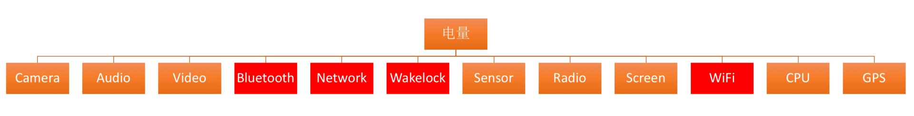
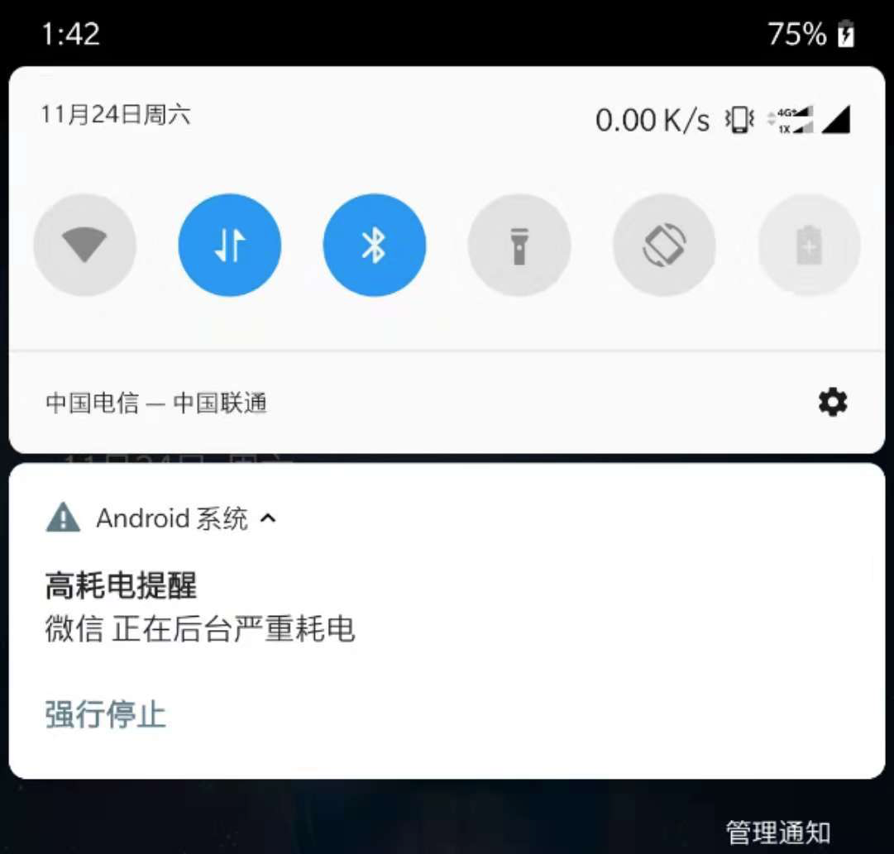
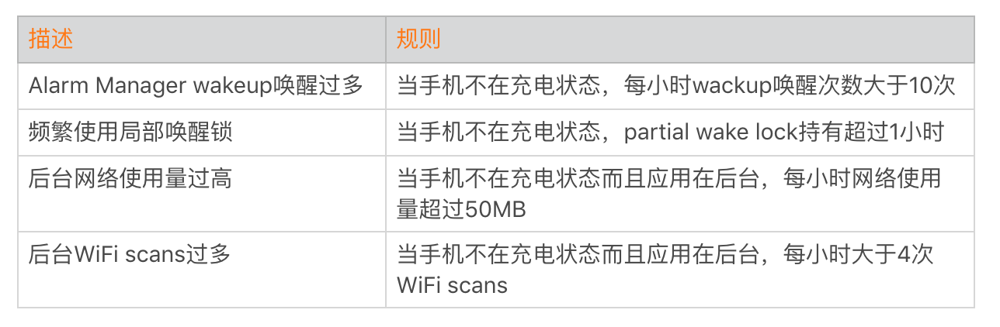
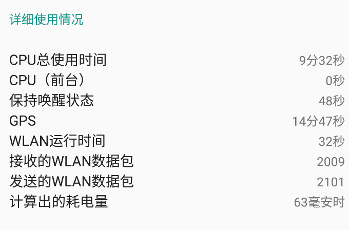
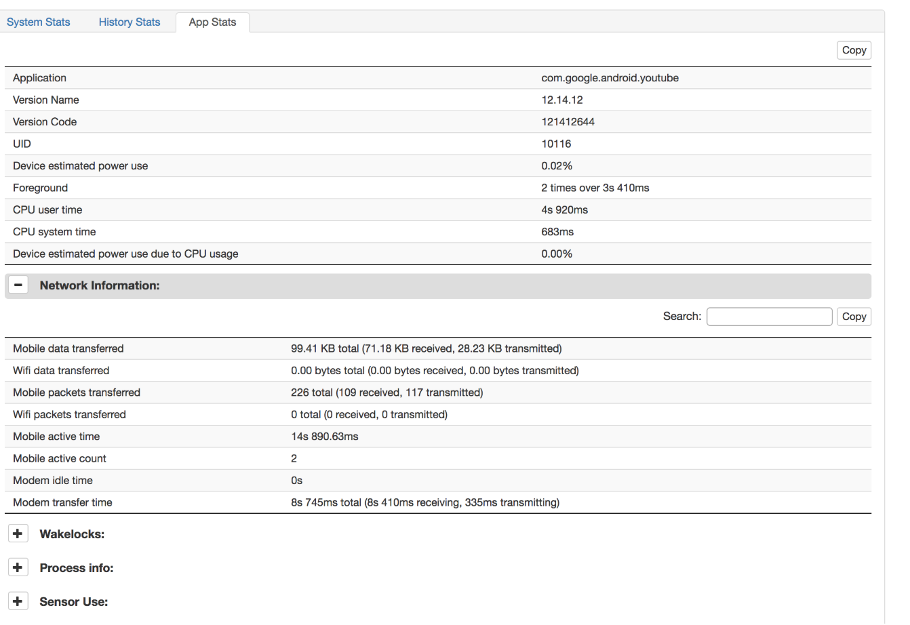
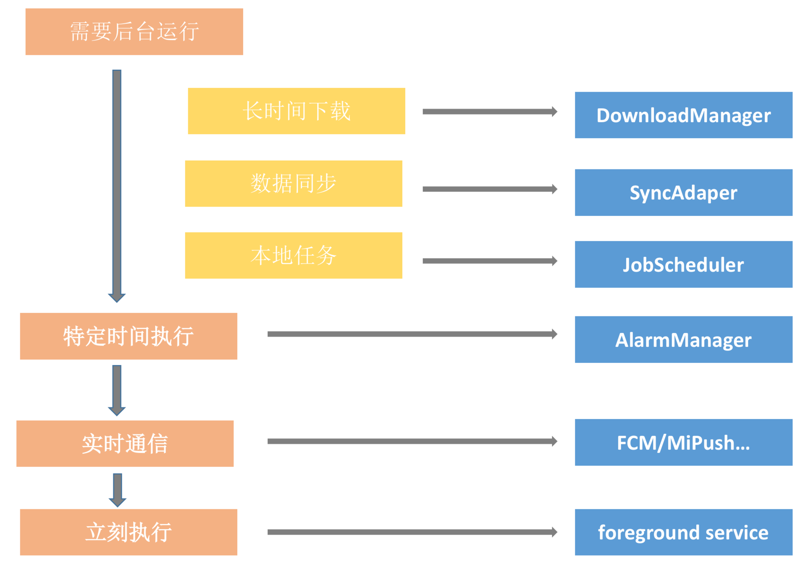
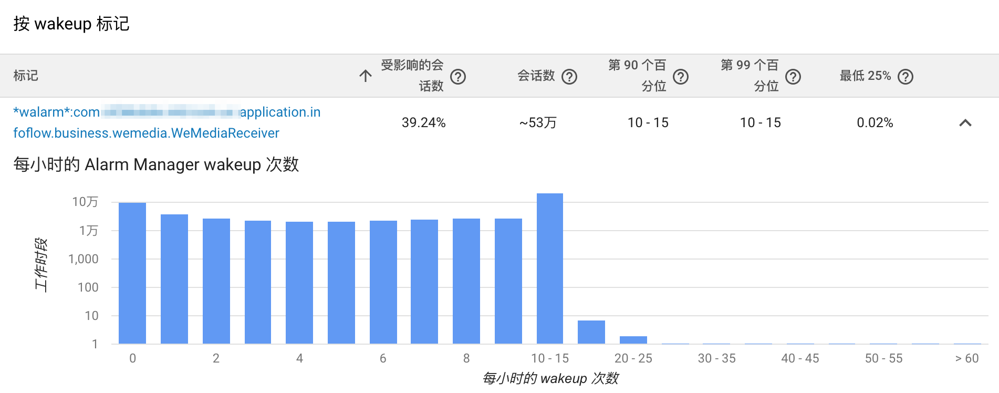
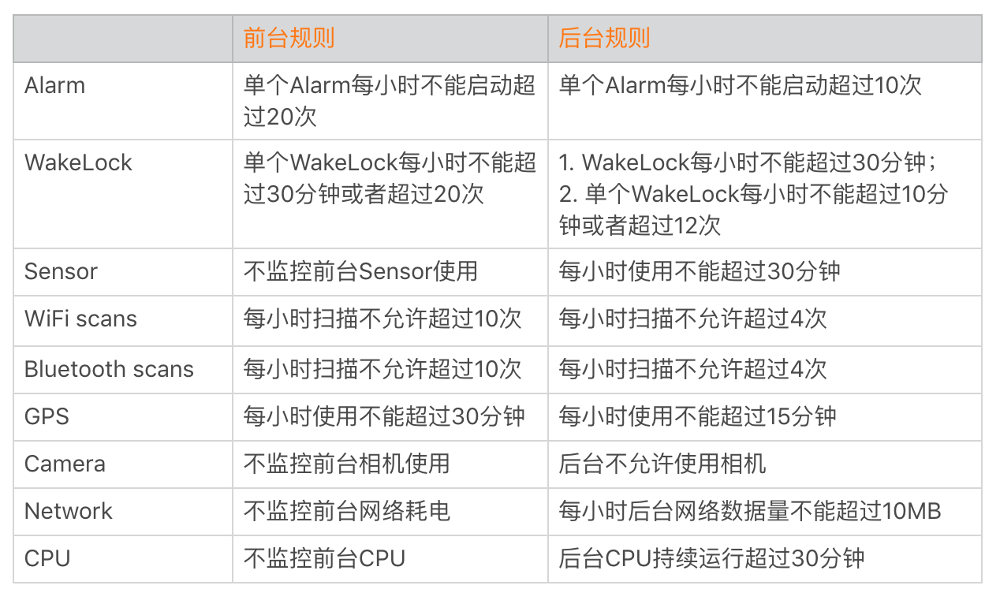
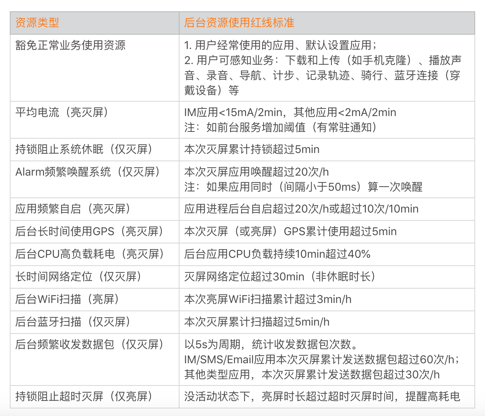

相比启动、卡顿、内存和网络的优化来说，可能大多数应用对耗电优化的关注不是太多。当然并不是我们不想做耗电优化，更多时候是感觉有些无从下手。
不同于启动时间、卡顿率，耗电在线上一直缺乏一个可以量化的指标。Android 系统通过计算获得的应用耗电数据只是一个估算值，从 Android 4.4 开始，连这个估算值也无法拿到了。当有用户投诉我们应用耗电的时候，我们一般也无所适从，不知道该如何定位、如何分析。
耗电优化究竟需要做哪些工作？我们如何快速定位代码中的不合理调用，并且持续监控应用的耗电情况呢？今天我们就一起来学习耗电的优化方法和线上监控方案。
耗电优化
在开始讲如何做耗电优化之前，你需要先明确什么是耗电优化，做这件事情的目的究竟是什么。
1. 什么是耗电优化
有些同学可能会疑惑，所谓的耗电优化不就是减少应用的耗电，增加用户的续航时间吗？但是落到实践中，如果我们的应用需要播放视频、需要获取 GPS 信息、需要拍照，这些耗电看起来是无法避免的。
如何判断哪些耗电是可以避免，或者是需要去优化的呢？你可以看下面这张图，当用户去看耗电排行榜的时候，发现“王者荣耀”使用了 7 个多小时，这时用户对“王者荣耀”的耗电是有预期的。
假设这个时候发现某个应用他根本没怎么使用（前台时间很少），但是耗电却非常多。这种情况会跟用户的预期差别很大，他可能就会想去投诉。
所以耗电优化的第一个方向是优化应用的后台耗电。知道了系统是如何计算耗电的，那反过来看，我们也就可以知道应用在后台不应该做什么，例如长时间获取 WakeLock、WiFi 和蓝牙的扫描等。为什么说耗电优化第一个方向就是优化应用后台耗电，因为大部分厂商预装项目要求最严格的正是应用后台待机耗电。

当然前台耗电我们不会完全不管，但是标准会放松很多。你再来看看下面这张图，如果系统对你的应用弹出这个对话框，可能对于微信来说，用户还可以忍受，但是对其他大多数的应用来说，可能很多用户就直接把你加入到后台限制的名单中了。

耗电优化的第二个方向是符合系统的规则，让系统认为你耗电是正常的。而 Android P 是通过 Android Vitals 监控后台耗电，所以我们需要符合 Android Vitals 的规则，目前它的具体规则如下：

虽然上面的标准可能随时会改变，但是可以看到，Android 系统目前比较关心后台 Alarm 唤醒、后台网络、后台 WiFi 扫描以及部分长时间 WakeLock 阻止系统后台休眠。
2. 耗电优化的难点
既然已经明确了耗电优化的目的和方向，那我们就开始动手吧。但我想说的是，只有当你跳进去的时候，才能发现耗电优化这个坑有多深。它主要有下面几个问题：
- 缺乏现场，无法复现。用户上传某个截图，你的应用耗电占比 30%。通过电量的详细使用情况，我们可能会有一些猜测。但是用户也无法给出更丰富的信息，以及具体是在什么场景发生的，可以说是毫无头绪。

- 信息不全，难以定位。如果是开发人员或者厂商可以提供 bug report，利用 Battery Historian 可以得到非常全的耗电统计信息。但是 Battery Historian 缺失了最重要的堆栈信息，代码调用那么复杂，可能还有很多的第三方 SDK，我们根本不知道是哪一行代码申请了 WakeLock、使用了 Sensor、调用了网络等。

- 无法评估结果。通过猜测，我们可能会尝试一些解决方案。但是从 Android 4.4 开始，我们无法拿到应用的耗电信息。尽管我们解决了某个耗电问题，也很难去评估它是否已经生效，以及对用户产生的价值有多大。
3. 耗电优化的方法
无法复现、难以定位，也无法评估结果，耗电优化之路实在是不容易。在真正去做优化之前，先来看看我们的应用为什么需要在后台耗电？
大部分的开发者不是为了“报复社会”，故意去浪费用户的电量，主要可能有以下一些原因：
-
某个需求场景。最普遍的场景就是推送，为了实现推送我们只能做各种各样的保活。在需求面前，用户的价值可能被排到第二位。
-
代码的 Bug。因为某些逻辑考虑不周，可能导致 GPS 没有关闭、WakeLock 没有释放。
所以相反地，耗电优化的思路也非常简单。
- 找到需求场景的替代方案。以推送为例，我们是否可以更多地利用厂商通道，或者定时的拉取最新消息这种模式。如果真是迫不得已，是不是可以使用 foreground service 或者引导用户加入白名单。后台任务的总体指导思想是减少、延迟和合并，可以参考微信一个小伙写的《Android 后台调度任务与省电》。在后台运行某个任务之前，我们都需要经过下面的思考：

- 符合 Android 规则。首先系统的大部分耗电监控，都是在手机在没有充电的时候。我们可以选择在用户充电时才去做一些耗电的工作，具体方法可查看官方文档《监控电池电量和充电状态》。其次是尽早适配最新的 Target API，因为高版本系统后台限制本来就非常严格，应用在后台耗电本身就变得比较困难了。
IntentFilter ifilter = new IntentFilter(Intent.ACTION_BATTERY_CHANGED);Intent batteryStatus = context.registerReceiver(null, ifilter); // 获取用户是否在充电的状态或者已经充满电了int status = batteryStatus.getIntExtra(BatteryManager.EXTRA_STATUS, -1);boolean isCharging = status == BatteryManager.BATTERY_STATUS_CHARGING || status == BatteryManager.BATTERY_STATUS_FULL;- 异常情况监控。即使是最严格的 Android P，系统也会允许应用部分地使用后台网络、Alarm 以及 JobSheduler 事件（不同的分组，限制次数不同）。因此出现异常情况的可能性还是存在的，更不用说低版本的系统。对于异常的情况，我们需要类似 Android Vitals 电量监控一样，将规则抽象出来，并且增加上更多辅助我们定位问题的信息。
耗电监控
在 I/O 监控中，我指定了重复 I/O、主线程 I/O、Buffer 过大以及 I/O 泄漏这四个规则。对于耗电监控也是如此，我们首先需要抽象出具体的规则，然后收集尽量多的辅助信息，帮助问题的排查。
1. Android Vitals
前面已经说过 Android Vitals 的几个关于电量的监控方案与规则，我们先复习一下。
在使用了一段时间之后，我发现它并不是那么好用。以 Alarm wakeup 为例，Vitals 以每小时超过 10 次作为规则。由于这个规则无法做修改，很多时候我们可能希望针对不同的系统版本做更加细致的区分。
其次跟 Battery Historian 一样，我们只能拿到 wakeup 的标记的组件，拿不到申请的堆栈，也拿不到当时手机是否在充电、剩余电量等信息。

对于网络、WiFi scans 以及 WakeLock 也是如此。虽然 Vitals 帮助我们缩小了排查的范围，但是依然需要在茫茫的代码中寻找对应的可疑代码。
2. 耗电监控都监控什么
Android Vitals 并不是那么好用，而且对于国内的应用来说其实也根本无法使用。不管怎样，我们还是需要搭建自己的耗电监控系统。
那我们的耗电监控系统应该监控哪些内容，怎么样才能比 Android Vitals 做得更好呢？
-
监控信息。简单来说系统关心什么，我们就监控什么，而且应该以后台耗电监控为主。类似 Alarm wakeup、WakeLock、WiFi scans、Network 都是必须的，其他的可以根据应用的实际情况。如果是地图应用，后台获取 GPS 是被允许的；如果是计步器应用，后台获取 Sensor 也没有太大问题。
-
现场信息。监控系统希望可以获得完整的堆栈信息，比如哪一行代码发起了 WiFi scans、哪一行代码申请了 WakeLock 等。还有当时手机是否在充电、手机的电量水平、应用前台和后台时间、CPU 状态等一些信息也可以帮助我们排查某些问题。
-
提炼规则。最后我们需要将监控的内容抽象成规则，当然不同应用监控的事项或者参数都不太一样。
由于每个应用的具体情况都不太一样，下面是一些可以用来参考的简单规则。

在安卓绿色联盟的会议中，华为公开过他们后台资源使用的“红线”，你也可以参考里面的一些规则：

2. 如何监控耗电
明确了我们需要监控什么以及具体的规则之后，终于可以来到实现这个环节了。跟 I/O 监控、网络监控一样，我首先想到的还是 Hook 方案。
Java Hook
Hook 方案的好处在于使用者接入非常简单，不需要去修改自己的代码。下面我以几个比较常用的规则为例，看看如果使用 Java Hook 达到监控的目的。
- WakeLock。WakeLock 用来阻止 CPU、屏幕甚至是键盘的休眠。类似 Alarm、JobService 也会申请 WakeLock 来完成后台 CPU 操作。WakeLock 的核心控制代码都在PowerManagerService中，实现的方法非常简单。
// 代理 PowerManagerServiceProxyHook().proxyHook(context.getSystemService(Context.POWER_SERVICE), "mService", this)； @Overridepublic void beforeInvoke(Method method, Object[] args) { // 申请 Wakelock if (method.getName().equals("acquireWakeLock")) { if (isAppBackground()) { // 应用后台逻辑，获取应用堆栈等等 } else { // 应用前台逻辑，获取应用堆栈等等 } // 释放 Wakelock } else if (method.getName().equals("releaseWakeLock")) { // 释放的逻辑 }}- Alarm。Alarm 用来做一些定时的重复任务，它一共有四个类型，其中ELAPSED_REALTIME_WAKEUP和RTC_WAKEUP类型都会唤醒设备。同样，Alarm 的核心控制逻辑都在AlarmManagerService中，实现如下：
// 代理 AlarmManagerServicenew ProxyHook().proxyHook(context.getSystemService(Context.ALARM_SERVICE), "mService", this)； public void beforeInvoke(Method method, Object[] args) { // 设置 Alarm if (method.getName().equals("set")) { // 不同版本参数类型的适配，获取应用堆栈等等 // 清除 Alarm } else if (method.getName().equals("remove")) { // 清除的逻辑 }}- 其他。对于后台 CPU，我们可以使用卡顿监控学到的方法。对于后台网络，同样我们可以通过网络监控学到的方法。对于 GPS 监控，我们可以通过 Hook 代理LOCATION_SERVICE。对于 Sensor，我们通过 Hook SENSOR_SERVICE中的“mSensorListeners”，可以拿到部分信息。
通过 Hook，我们可以在申请资源的时候将堆栈信息保存起来。当我们触发某个规则上报问题的时候，可以将收集到的堆栈信息、电池是否充电、CPU 信息、应用前后台时间等辅助信息也一起带上。
插桩
虽然使用 Hook 非常简单，但是某些规则可能不太容易找到合适的 Hook 点。而且在 Android P 之后，很多的 Hook 点都不支持了。
出于兼容性考虑，我首先想到的是写一个基础类，然后在统一的调用接口中增加监控逻辑。以 WakeLock 为例：
public class WakelockMetrics { // Wakelock 申请 public void acquire(PowerManager.WakeLock wakelock) { wakeLock.acquire(); // 在这里增加 Wakelock 申请监控逻辑 } // Wakelock 释放 public void release(PowerManager.WakeLock wakelock, int flags) { wakelock.release(); // 在这里增加 Wakelock 释放监控逻辑 }}Facebook 也有一个耗电监控的开源库Battery-Metrics，它监控的数据非常全，包括 Alarm、WakeLock、Camera、CPU、Network 等，而且也有收集电量充电状态、电量水平等信息。
Battery-Metrics 只是提供了一系列的基础类，在实际使用中，接入者可能需要修改大量的源码。但对于一些第三方 SDK 或者后续增加的代码，我们可能就不太能保证可以监控到了。这些场景也就无法监控了，所以 Facebook 内部是使用插桩来动态替换。
遗憾的是，Facebook 并没有开源它们内部的插桩具体实现方案。不过这实现起来其实并不困难，事实上在我们前面的 Sample 中，已经使用过 ASM、Aspectj 这两种插桩方案了。后面我也安排单独一期内容来讲不同插桩方案的实现。
插桩方案使用起来兼容性非常好，并且使用者也没有太大的接入成本。但是它并不是完美无缺的，对于系统的代码插桩方案是无法替换的，例如 JobService 申请 PARTIAL_WAKE_LOCK 的场景。
总结
从 Android 系统计算耗电的方法，我们知道了需要关注哪些模块的耗电。从 Android 耗电优化的演进历程，我们知道了 Android 在耗电优化的一些方向以及在意的点。从 Android Vitals 的耗电监控，我们知道了耗电优化的监控方式。
但是系统的方法不一定可以完全适合我们的应用，还是需要通过进一步阅读源码、思考，沉淀出一套我们自己的优化实践方案。这也是我的性能优化方法论，在其他的领域也是如此。
课后作业
在你的项目中，做过哪些耗电优化和监控的工作吗？你的实现方案是怎样的？欢迎留言跟我和其他同学一起讨论。
今天的课后练习是，按照文中的思路，使用 Java Hook 实现 Alarm、WakeLock 和 GPS 的耗电监控。具体的规则跟文中表格一致，请将完善后的代码通过 Pull requests 提交到Chapter19中。
COMMUNITY NOTES
读者评论
“虽然使用 Hook 非常简单” ，之前没用过，不觉得很简单😢
如果手机本来就是android5.0,就算指定了项目中的Target API,这样能启动省电效果吗?